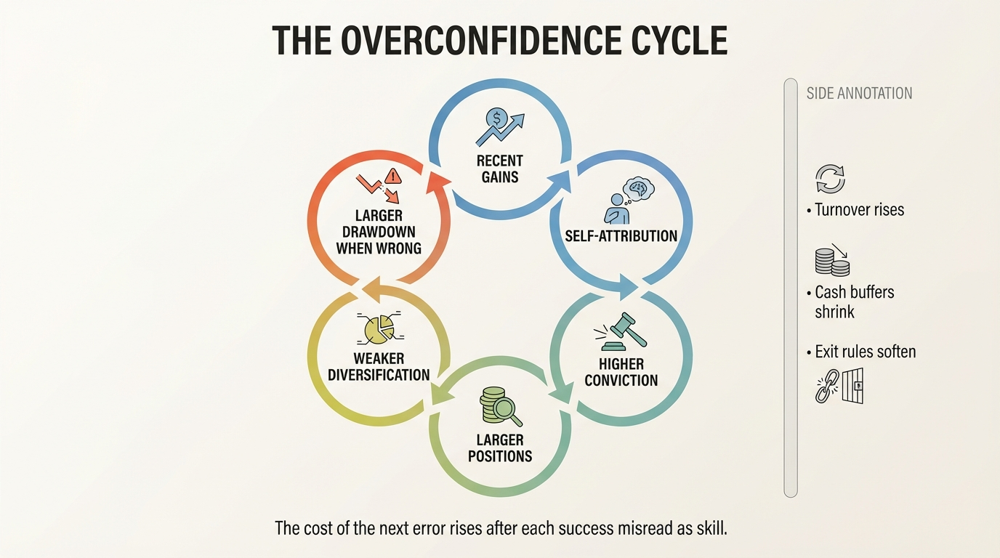
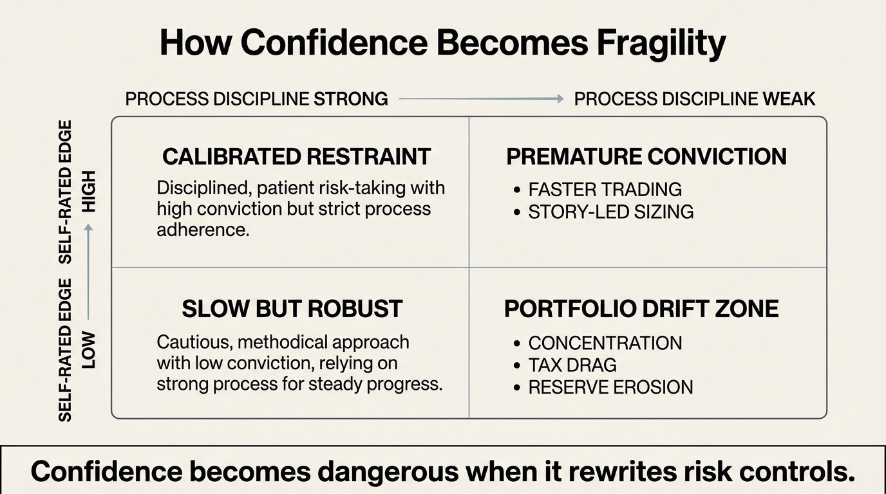

The Overconfidence Cycle
Most wealth mistakes do not begin with ignorance. They begin with a run of outcomes that feels like proof. A concentrated stock works, a tactical trade lands, a property bet looks brilliant, and the investor slowly stops separating luck, beta, and timing from durable skill. The cycle is dangerous because the first stage often looks like success.
Overconfidence is usually described as a personality flaw. That framing is too weak. In practice it behaves like a balance-sheet process. A recent gain changes self-assessment, self-assessment changes position sizing, larger positions change fragility, and fragility changes what the next mistake costs. The investor is not simply feeling too good. The investor is rewiring risk controls around a false inference.
Core thesis: the overconfidence cycle has four repeating stages: success gets attributed to skill, risk tolerance silently expands, diversification and discipline weaken, and the next adverse move becomes both financially larger and psychologically harder to reverse. The trap is not confidence itself. It is confidence that has not been properly discounted for luck, regime, and memory distortion.

Why Overconfidence Is A Wealth Trap Rather Than A Mere Bias
Wealth compounds through survival, position discipline, tax control, and time. Overconfidence interferes with all four. It pushes investors toward excess trading, concentrated exposures, leverage rationalizations, and lower respect for base rates. That matters even when outcomes stay positive for a while. A strong run can increase household wealth and still weaken the process that produced it.
Barber and Odean's account-level work remains the cleanest starting point. In Trading Is Hazardous to Your Wealth, households that traded most actively underperformed the market by a wide margin after costs. In Boys Will Be Boys, the same authors used gender as a proxy for overconfidence and found that the more overconfident cohort traded more and damaged returns more. The point is not that every active trade is irrational. The point is that excessive belief in one's own edge converts into measurable turnover and measurable drag.
The trap deepens because investors do not process wins and losses symmetrically. A profitable position is easy to absorb into identity. It feels like evidence of foresight. A loss is more likely to be filed under bad timing, temporary noise, or exogenous unfairness. Once that asymmetry takes hold, the investor's internal performance record stops being an honest audit and starts becoming a recruitment pitch for the next oversized bet.
The Cycle Usually Starts With Partial Truth
Many overconfident investors are not delusional. They often do have some real competence. They work in a sector they invest in, follow markets carefully, or correctly identify a broad structural trend. The problem is that a partial edge gets promoted into a general edge. One correct macro call becomes evidence of stock-selection skill. One concentrated winner becomes evidence that diversification is cowardice. One period of fast decision-making becomes evidence that caution is a tax on intelligence.
This is why the cycle can look sophisticated from the outside. The investor has a narrative, vocabulary, data points, and often a few undeniable wins. The analytical weakness sits in calibration. How much of the result came from regime tailwinds, multiple expansion, broad market beta, or sheer path dependence? If that question is not answered rigorously, conviction expands faster than actual edge.
In household wealth terms, this is the moment when a sound allocation process starts getting rewritten around identity. Cash reserves become "dead capital." Rebalancing becomes "selling winners too early." Diversification becomes "diworsification." Insurance becomes a drag on upside. None of those statements is always wrong. They become dangerous when they are being used to protect self-image rather than to optimize a portfolio under uncertainty.
Memory Distortion Makes The Cycle Harder To Detect
One reason the cycle persists is that people are poor historians of their own judgment. Keith Ericson's work on memory and overconfidence showed that people systematically misjudge their future follow-through in part because they do not remember prior misses cleanly. The direct domain in that paper is prospective memory rather than investing, but the mechanism transfers. When recall is selective, people experience their own record as stronger than it is. That creates room for repeated overestimation.
For investors, this means the self-audit after a strong year is rarely neutral. The portfolio owner remembers the sharp thematic calls, the fast purchases, and the courage to hold through volatility. The forgotten material is just as important: the lucky timing, the positions considered but never taken, the cash that happened to be available, the broad index tailwind, or the losses mentally written off as exceptions. A distorted memory ledger is an accelerant for overconfidence because it cheapens humility without any explicit argument.
The modern retail environment makes this worse. Portfolio apps surface recent percentage gains continuously. Social platforms reward screenshots, certainty, and hero narratives. The investor is therefore receiving two layers of reinforcement at once: internal memory editing and external status feedback. The household may think it is building sophistication while actually just shortening the loop between a good outcome and a bad inference.

Where The Wealth Damage Actually Appears
The first damage is usually invisible. Fees rise. Taxes rise. Cash buffers shrink. Position count falls. Exit rules get more discretionary. The investor starts needing the thesis to be right because the portfolio is no longer built to tolerate being wrong. This is why overconfidence belongs in the same family of traps as liquidity illusion and concentration drift. It degrades process before it degrades net worth.
The second damage is decision narrowing. An overconfident investor tends to become less able to scale down gracefully because scaling down would require admitting that prior conviction was overstated. The result is a slower response to changing evidence. What begins as confidence becomes commitment. What begins as commitment becomes ego defense. By the time the investor sells, the loss is often larger than the original analysis error required.
The third damage is household spillover. A portfolio process that is too tied to one person's self-image can distort the entire family's risk posture. Emergency reserves stay thin because capital is "needed" for opportunity. Career risk is tolerated poorly because investment volatility is assumed to be manageable. Housing, education, and tax planning decisions get subordinated to a portfolio that is being run as a referendum on intelligence rather than as infrastructure for long-horizon resilience.
Overconfidence Is Not The Same As Courage
It is easy to overcorrect and treat all conviction as suspect. That would be a different mistake. Some investors do have domain knowledge, access advantages, or long time horizons that justify selective concentration. Some entrepreneurs should maintain concentrated exposure to businesses they understand better than the market. Some households should hold through discomfort rather than trade constantly. The useful distinction is procedural. Real edge survives hostile questioning, explicit downside mapping, and precommitted sizing rules. Overconfidence resists those disciplines because they constrain the story the investor wants to believe.
A practical test is simple. If the thesis is correct, what is the maximum portfolio weight it deserves? What evidence would reduce that weight? What part of the recent result is likely attributable to beta or regime rather than stock-picking or timing skill? Which liquid reserve remains untouchable even if the opportunity feels extraordinary? A confident investor can answer those questions. An overconfident one tends to treat them as irritations.
How To Break The Cycle Before It Becomes Expensive
- Separate outcome review from decision review. Record what was known at entry, what was unknowable, and what actually drove the result.
- Use hard sizing caps. If conviction grows, let the cap force a sell-down rather than trusting feelings of control.
- Track turnover as a warning signal. Higher trading frequency often means confidence is outrunning process.
- Keep a standing base-rate file. Compare active results against simple benchmarks and after-tax outcomes, not only gross wins.
- Protect the household reserve layer. Speculation should never consume the cash that preserves mobility and patience.
The deeper correction is cultural inside the household. Wealth building should reward calibration, not drama. A boring process that survives many regimes is more valuable than an exciting process that requires constant interpretive genius. If success always increases the size and fragility of the next bet, then success is not being metabolized correctly.
Known, Inferred, And Unknown
| Category | Assessment |
|---|---|
| Known | Account-level evidence shows that investors who trade more actively tend to underperform after costs. |
| Known | Research using overconfidence proxies finds that more overconfident cohorts trade more and damage performance more. |
| Known | Recent survey evidence from Japan links overconfidence to weaker behavior during market stress, including panic-selling tendencies. |
| Inferred | Household wealth damage from overconfidence often arrives first through concentration, tax drag, and reduced optionality rather than a single dramatic blowup. |
| Unknown | Which interventions best reduce overconfidence in real investors without also suppressing the conviction needed for rational long-horizon risk taking. |
The Practical Correction
The most useful reframe is to stop treating confidence as an emotion and start treating it as a position-sizing input that must be audited. Confidence can be earned, but it still needs haircuts. Every recent win should be decomposed into skill, regime, and luck. Every enlarged position should be justified against the full household balance sheet rather than against the elegance of the thesis. When that discipline is absent, confidence compounds into fragility.
That is why the overconfidence cycle belongs on WealthMeter's structural map. It is not only a market bias. It is a capital-allocation failure that makes later mistakes costlier than earlier ones. The wealth penalty is not merely that the investor is wrong. The wealth penalty is that the investor becomes less governable precisely when governance matters most.
Further Reading Inside The Site
This article connects directly to The Concentration vs Diversification Tradeoff, The Liquidity Illusion, and Are You Rich or Just in a Bubble?. Together they show how conviction, liquidity, and benchmark confusion can combine into a single household risk error.
Source List
Barber BM, Odean T. Trading Is Hazardous to Your Wealth: The Common Stock Investment Performance of Individual Investors. 2000 working paper version.
Barber BM, Odean T. Boys Will Be Boys: Gender, Overconfidence, and Common Stock Investment. 2000 working paper version.
Ericson KME. Forgetting We Forget: Overconfidence and Memory. Journal of the European Economic Association. 2011.
Bawalle AA, Khan MSR, Kadoya Y. Overconfidence, Financial Literacy, and Panic Selling: Evidence From Japan. PLOS One. 2025.